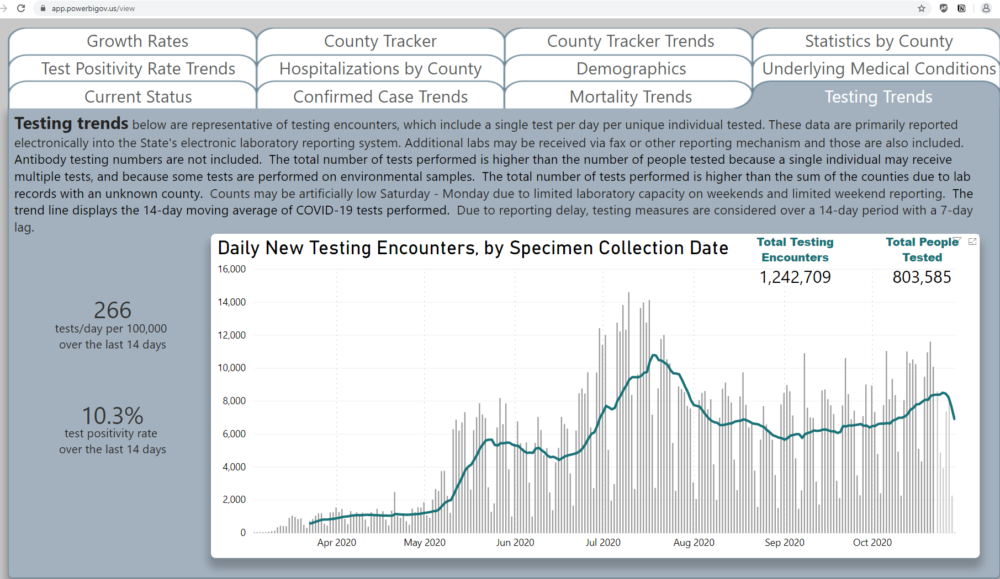

[NV]Backfill total test encounters from state data
State or US: Nevada
Describe the problem On 10/15 Nevada switched their reporting from Total Tests (PCR) to Total Test Encounters (PCR) and the full time series of the new unit is available on their dashboard, and can be accessed via the PowerBI source code.

*The first day of data is set as 32 tests with a 23 constant added to match the totals on the dashboard perfectly.
We backfilled our Total Test Encounters (PCR) for Nevada using the data behind the dashboard above. Attached are the analysis and raw data sheets used during this backfill.
NV - Analysis PCR Encounters 20201029.csv.txt NV - Sheet12.csv.txt